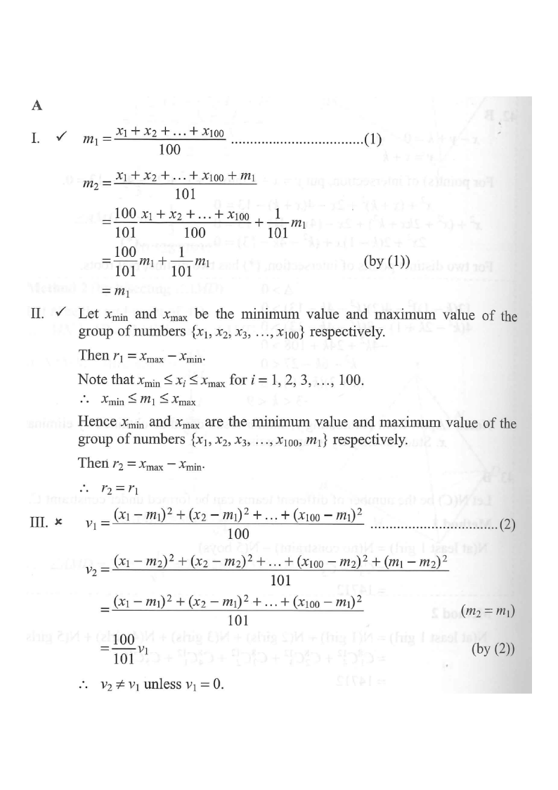

original numbers $x_1,\dots,x_{100}$the appended value $m_1$mean linerange bracket
HKDSE 2012 Paper 2 · Q45 · Statistics
Let $m_1$, $r_1$ and $v_1$ be the mean, the range and the variance of a group of numbers
$\{x_1,\,x_2,\,x_3,\,\dots,\,x_{100}\}$ respectively. If $m_2$, $r_2$ and $v_2$ are the mean,
the range and the variance of the group of numbers
$\{x_1,\,x_2,\,x_3,\,\dots,\,x_{100},\,m_1\}$ respectively, which of the following must be true?
I. $m_1=m_2$ II. $r_1=r_2$ III. $v_1=v_2$
A. I and II only
B. I and III only
C. II and III only
D. I, II and III

Figure (original exam diagram)
1Statement I — the mean stays the same
Mean of a Data Set\(\bar{x}=\dfrac{x_{1}+x_{2}+\cdots+x_{n}}{n}\)Statement I compares the mean of the 100 values with the mean after \(m_{1}\) is added.
Key idea: the new datum equals the old mean, so it "pulls" nothing — the average is unchanged.
2Statement II — the range stays the same
Range of a Data Set\(R=x_{\max}-x_{\min}\)Adding \(m_{1}\), which lies between \(x_{\min}\) and \(x_{\max}\), leaves the largest and smallest values unchanged.
Let $x_{\min}$ and $x_{\max}$ be the minimum and maximum of $x_1,x_2,\dots,x_{100}$.
$$r_1=x_{\max}-x_{\min}$$
Since the mean always lies inside the data range, $x_{\min}\le m_1\le x_{\max}$. Therefore adding $m_1$
to the set does not change the minimum or the maximum:
$$r_2=x_{\max}-x_{\min}=r_1$$
Statement II is true ✔
The appended number $m_1$ is squeezed between the smallest and largest values, so it creates no new extreme.
3Statement III — the variance changes
Variance\(v=\dfrac{(x_{1}-\bar{x})^{2}+(x_{2}-\bar{x})^{2}+\cdots+(x_{n}-\bar{x})^{2}}{n}\)Statement III needs \(v_{2}\) for the 101 values compared with the original \(v_{1}\).
Put $m_2=m_1$ (from Step 1) into (2). The new datum contributes $(m_1-m_1)^2=0$, so the numerator is
exactly the numerator of (1) while the denominator changes from $100$ to $101$:
Since $\dfrac{100}{101}\ne 1$, we get $v_2\ne v_1$ unless $v_1=0$, so Statement III is not necessarily true ✘
Dividing the same total spread by a larger count makes the variance slightly smaller.
4Conclusion
Only Statements I and II must be true.
Answer: A. I and II only
PRACTICESimilar question — try it yourself
Question. The mean of 9 numbers is \(20\) and their variance is \(4\). A tenth number, \(25\), is added to the set. (a) Find the new mean. (b) Find the new variance and state whether it is larger or smaller than \(4\).
Show the worked solution
Step 1. The sum of the 9 numbers is \(9\times20=180\).
Step 2. New mean \(=\dfrac{180+25}{10}=\dfrac{205}{10}=20.5\).
Step 3. Sum of squared deviations about the new mean: \(9(4)+9(20-20.5)^{2}+(25-20.5)^{2}=36+2.25+20.25=58.5\).
Step 4. New variance \(=\dfrac{58.5}{10}=5.85\), which is larger than \(4\): adding a value far from the mean increases the spread.
Answer: (a) \(20.5\) (b) \(5.85\), which is larger than \(4\).